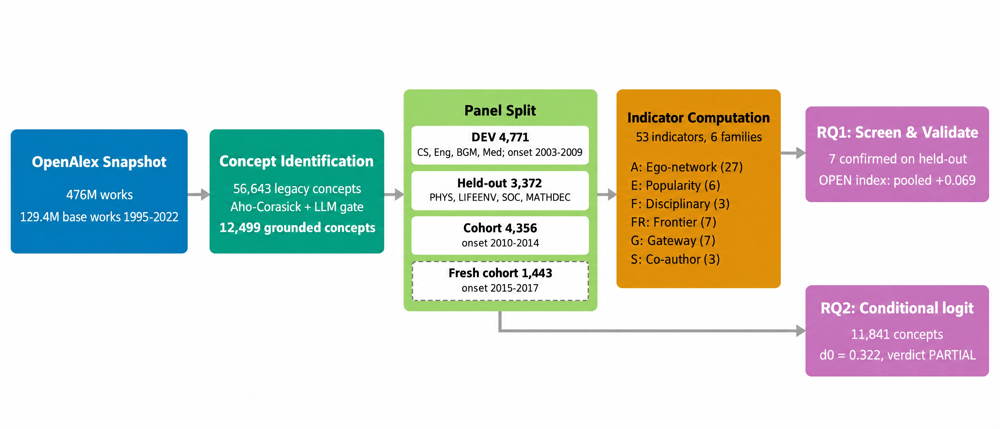

The finding
Concepts with an open early neighbourhood reach more fields later
Some scientific concepts stay in their home discipline; others cross into many fields within a few years. Can the shape of a concept's first three years of topic co-occurrences tell the two apart, beyond what its early popularity already says?
Yes, a little. The measures how far a concept's early reaches into new, community-spanning topics. Computed only from the home field, it has a positive correlation with later after the is removed, in every body of concepts that was not used to choose it.
The association is small. It adds no practical forecasting gain over B5, and all non-selection bodies except the 2015 to 2017 cohort had their outcomes read in earlier analyses, so the pool is descriptive rather than confirmatory.
Does the openness signal hold in every body of concepts?
Zero is the baseline: no association left once B5 and the rung's controls are removed. : R0 = B5 plus onset year; R2 adds contact reach, concept type, a generic-concept flag and concept level; R3 adds the pre-onset footprint.
How it works
From one concept's first three years to a pooled correlation
The study grounds 12,499 concepts in the OpenAlex snapshot, measures each one in the window from its t0 to t0+2, and scores what happened to it six to eight years later. The stepper follows one real concept through each stage with the values the run recorded for it. Its matched partner, similar in early volume and growth, is shown beside it.
What happens to one concept at each stage of the method?
Goes in
Comes out

Explore the evidence
Which early signals travel, and what they look like concept by concept
Ten indicators were chosen on DEV and tested once on four held-out field groups and two cohort splits. Seven survived Holm correction. The OPEN index was then built from the ego-network components and tested on a fresh 2015–2017 cohort whose outcomes no earlier step had read.
Which of the ten DEV-selected indicators hold up on held-out groups?
For a single concept in the fresh 2015–2017 cohort, what did B5 predict, what did B5 plus OPENhome predict, and what happened?
In matched pairs, does the more open concept end up broader?
Pairs were drawn by a rule that did not look at the outcome: top versus bottom OPENall quintile in the same group, matched on early volume and growth. Seven pairs are an illustration, not evidence.

Try it
Compute OPEN yourself, then ask what it buys
OPEN is simple enough to run exactly in the page: z-score six ego-network components with constants fitted on all 12,499 frame concepts, flip the sign of the two consolidation components, and average. Start from a real concept's recorded components; the page's result matches the run's recorded OPEN value until you move a slider.
How does each component move the OPEN index?
If you split the fresh cohort at an OPENhome threshold, do the open concepts beat their B5 forecast?
Residual = recorded O2r (m = 50) minus the frozen B5 forecast fitted on the EXP5 frame, both from the run's per-concept file. Means and counts are computed live from the 573 concepts that have an outcome, OPENhome and both forecasts.
Where it fails
What does not hold up
The paper's second question asks which field a concept enters next. A on an independent frame of 11,841 concepts finds that concepts spread next to fields related to the ones currently them: = 0.322 [0.291, 0.355], likelihood ratio 325.8. The pre-registered verdict is nonetheless PARTIAL. Switch the view to see why.
Does the retained-frontier effect survive every test the preregistration set?
Is the churn part of the signal real turnover, or a static property of the home-topic mix?
Partial Spearman with O2r (m = 50) at R2, 2,000 concept bootstraps. and permutation-z variants subtract a 200-draw within-concept year-permutation null; rare10 subsamples 10 home papers per year; Chao and configuration variants correct bias and degree. These bodies are selection data: robustness evidence, not confirmation.
What the paper does not show
- A useful forecast. OPENhome adds no forecasting gain over B5 (+0.002 [−0.003, +0.008]).
- Temporal turnover. Split-half reliability of OPENhome is 0.49 and the temporal-excess variants fall below 0.05, so temporal versus static dispersion cannot be resolved at about 10 home papers a year. Turnover is untested, not refuted.
- A causal mechanism. The within-concept closure test is null on DEV and opposite-signed on held-out fields (−0.079 [−0.146, −0.013]). Openness behaves as a between-concept trait.
- Freedom from coupling. About half of the OPENall signal is mechanical coupling between off-home papers in the ego network and the breadth outcome. OPENhome avoids this but is marginal.
- An unbiased vocabulary. The legacy OpenAlex concept list is survivor-selected; the vocabulary-free Frame N has 636 concepts and pre-unseal power of 0.47.
- Fully fresh held-out data. Held-out outcomes were unsealed by two earlier experiments, so the indicator screen's held-out results are robustness checks.